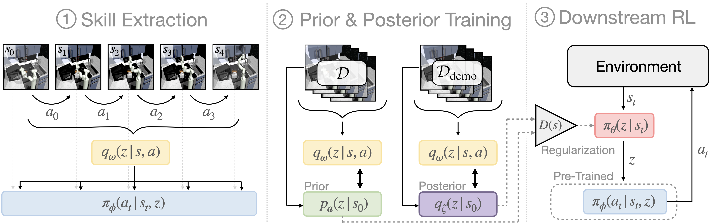
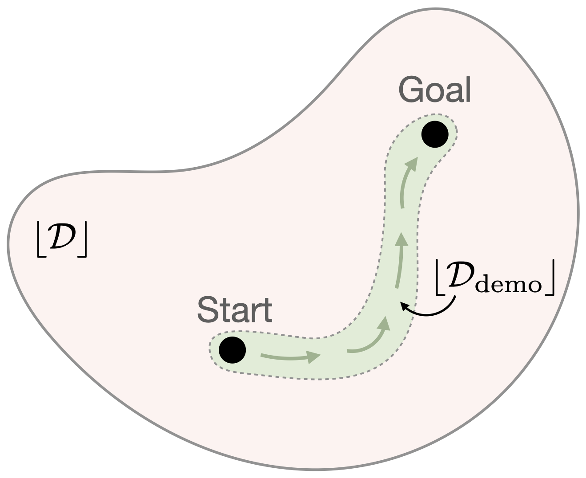
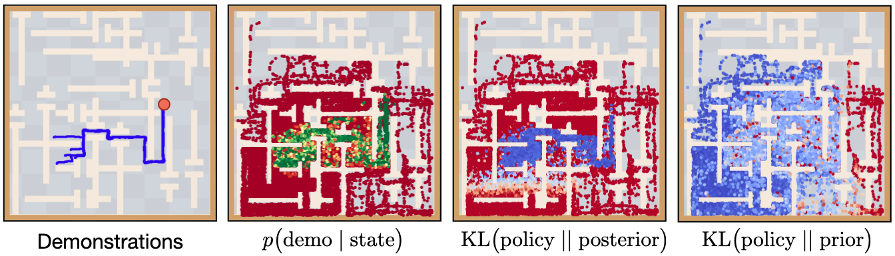
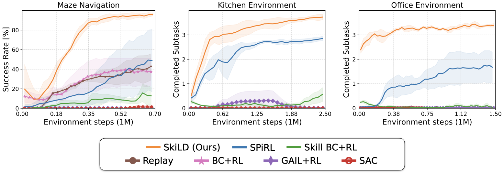
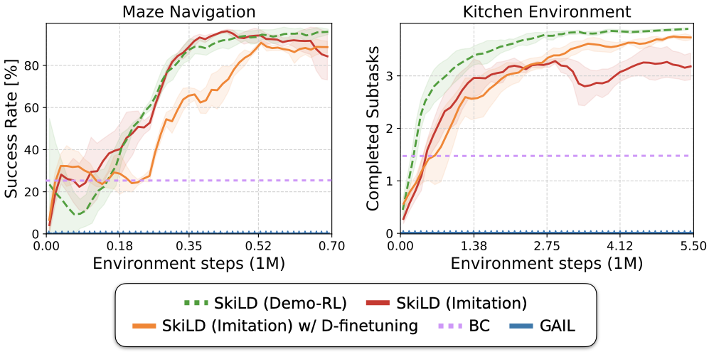

Demonstration-guided reinforcement learning (RL) is a promising approach for learning complex behaviors by leveraging both reward feedback and a set of target task demonstrations. Prior approaches for demonstration-guided RL treat every new task as an independent learning problem and attempt to follow the provided demonstrations step-by-step, akin to a human trying to imitate a completely unseen behavior by following the demonstrator's exact muscle movements. Naturally, such learning will be slow, but often new behaviors are not completely unseen: they share subtasks with behaviors we have previously learned. In this work, we aim to exploit this shared subtask structure to increase the efficiency of demonstration-guided RL. We first learn a set of reusable skills from large offline datasets of prior experience collected across many tasks. We then propose Skill-based Learning with Demonstrations (SkiLD), an algorithm for demonstration-guided RL that efficiently leverages the provided demonstrations by following the demonstrated skills instead of the primitive actions, resulting in substantial performance improvements over prior demonstration-guided RL approaches. We validate the effectiveness of our approach on long-horizon maze navigation and complex robot manipulation tasks.
Overview
Our goal is to use skills extracted from prior experience to improve the efficiency of demonstration-guided RL on a new task. We aim to leverage a set of provided demonstrations by following the performed skills as opposed to the primitive actions.

Learning in our approach, SkiLD, is performed in three stages. (1): First, we extract a set of reusable skills from prior, task-agnostic experience. We build on prior work in skill-based RL for learning the skill extraction module (SPiRL, Pertsch et al. 2020). (2): We then use the pre-trained skill encoder to infer the skills performed in task-agnostic and demonstration sequences and learn state-conditioned skill distributions, which we call skill prior and skill posterior respectively. (3): Finally, we use both distributions to guide a hierarchical skill policy during learning of the downstream task.

Demonstration-Guided Downstream Learning
While we have learned a state-conditioned distribution over the demonstrated skills, we cannot always trust this skill posterior, since it is only valid within the demonstration support (green region). Thus, to guide the hierarchical policy during downstream learning, SkiLD leverages the skill posterior only within the support of the demonstrations and uses the learned skill prior otherwise, since it was trained on the task-agnostic experience dataset with a much wider support (red region).
Environments
Maze Navigation
Kitchen Manipulation
Office Cleanup
We evaluate our approach on three long-horizon tasks: maze navigation, kitchen manipulation and office cleanup. In each environment, we collect a large, task-agnostic dataset and a small set of task-specific demonstrations.
How does SkiLD Follow the Demonstrations?

We analyze the qualitative behavior of our approach in the maze environment: the discriminator D(s) can accurately estimate the support of the demonstrations (green). Thus, the SkiLD policy minimizes divergence to the demonstration-based skill posterior within the demonstration support (third panel, blue) and follows the task-agnostic skill prior otherwise (fourth panel). In summary, the agent learns to follow the demonstrations whenever it's within their support and falls back to prior-based exploration outside the support.
Qualitative Results
Kitchen Manipulation
SkiLD
SPiRL
SkillBC + SAC
Office Cleanup
Rollouts from the trained policies on the robotic manipulation tasks. In the kitchen environment the agent needs to perform four subtasks: open microwave, flip light switch, open slide cabinet, open hinge cabinet. In the office cleanup task it needs to put the correct objects in the correct receptacles. In both environments, our approach SkiLD is the only method that cann solve the full task. SPiRL lacks guidance through the demonstrations and thus solves wrong subtasks and fails at the target task. Skill-based BC with SAC finetuning is brittle and unable to solve more than one subtask. For more qualitative result videos, please check our supplementary website.
Quantitative Results

Imitation Learning Results

We apply SkiLD in the pure imitation setting, without access to environment rewards and instead use a GAIL-style reward based on our learned discriminator, which is trained to estimate demonstration support. We show that our approach is able to leverage prior experience through skills for effective imitation of long-horizon tasks. By finetuning the learned discriminator we can further improve performance on the kitchen manipulation task which requires more complex control.
Source Code
We have released our implementation in PyTorch on the github page. Try our code!
@article{pertsch2021skild,
title={Demonstration-Guided Reinforcement Learning with Learned Skills},
author={Karl Pertsch and Youngwoon Lee and Yue Wu and Joseph J. Lim},
journal={5th Conference on Robot Learning},
year={2021},
}